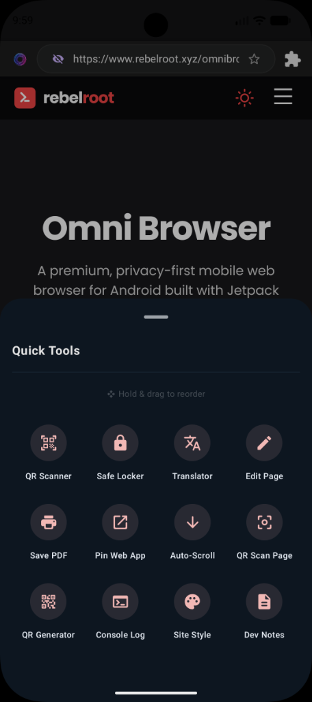
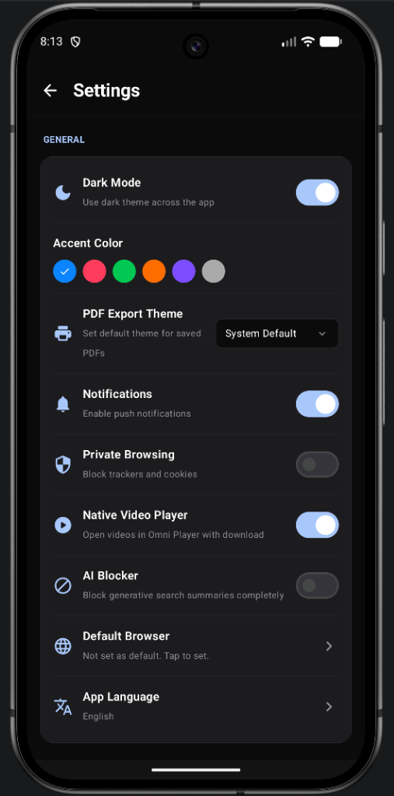

The browser that works for you, not against you.
Omni Browser is a private, fast and powerful open-source Android browser built on Mozilla’s GeckoView engine — with a stream sniffer, encrypted vault, Firefox extensions and zero telemetry.
Everything a power user wants. Nothing they don’t.
Omni packs a desktop-class feature set into a native Android app — without the tracking, the bloat or the paywalls.
Privacy & Security
A custom ad & tracker blocker with 180+ domain lists, engine-level popup blocking, Tor routing, a WireGuard VPN tunnel and an AES-256-GCM encrypted vault protected by biometrics. Burn everything with one tap.
Explore privacy → 🤖AI Tools
The bundled AI Blocker hides AI overviews on Google, Bing, DuckDuckGo and more.
Learn more → 🎬Media Hub
A network-level stream sniffer detects HLS, DASH and MSE streams, hands them to a native ExoPlayer with PiP, gesture controls and background audio — then extracts audio with on-demand FFmpeg.
Explore media → 🧩Extensions
Full Firefox WebExtension (.xpi) support from addons.mozilla.org, plus three bundled add-ons.
Learn more → ⬇️Downloads
Queue, pause and resume downloads, save straight to the vault, and batch-grab manga chapters.
Learn more → 🗂️Workspace
Smart tab auto-grouping by domain and isolated profiles keep work and life apart.
Learn more → 🔳QR & OCR
Scan and generate QR codes with the pure-FOSS ZXing engine — no Play Services required.
Learn more →A clean, unidirectional architecture
Jetpack Compose renders state from a single BrowserViewModel, which orchestrates GeckoView sessions and intercepts media — MVVM with one-way data flow.
Compose UI
Jetpack Compose + M3
BrowserViewModel
State & orchestration
GeckoSession
GeckoView v145
MediaInterceptor
Stream detection
See it in action
A dark, minimal interface designed for one-handed use, with a customizable bottom toolbar and quick-tools sheet.






Shipped fast, shipping faster
From a GeckoView prototype to a full privacy browser in a matter of months. Here’s where we’ve been and where we’re going.
Foundations
GeckoView engine, multi-tab browsing, WebExtension support, the notepad vault and the Omni media player.
Privacy & power
Custom ad-blocker, encrypted vault with biometrics, WireGuard VPN, Tor support, QR suite and FOSS-compliant ZXing scanning.
The road ahead
Collapsible tab groups, distraction-free reader mode, a password manager, Web3/dApp support and encrypted sync.
Start browsing on your terms
Read the quick start, sideload the latest APK, or dive into the source. Omni Browser is free, open source and built in the open.